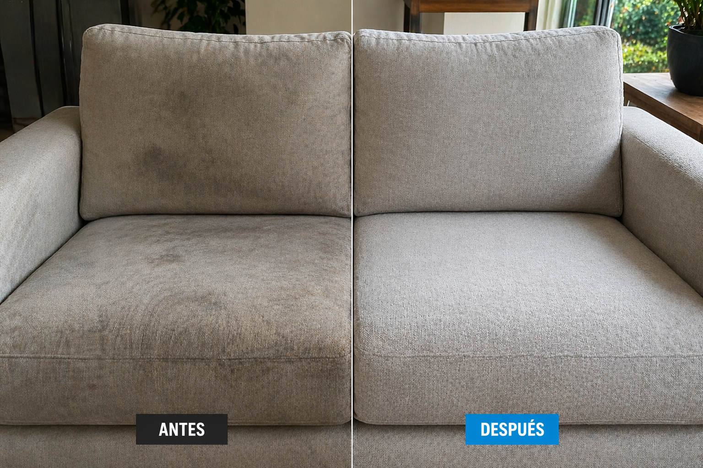
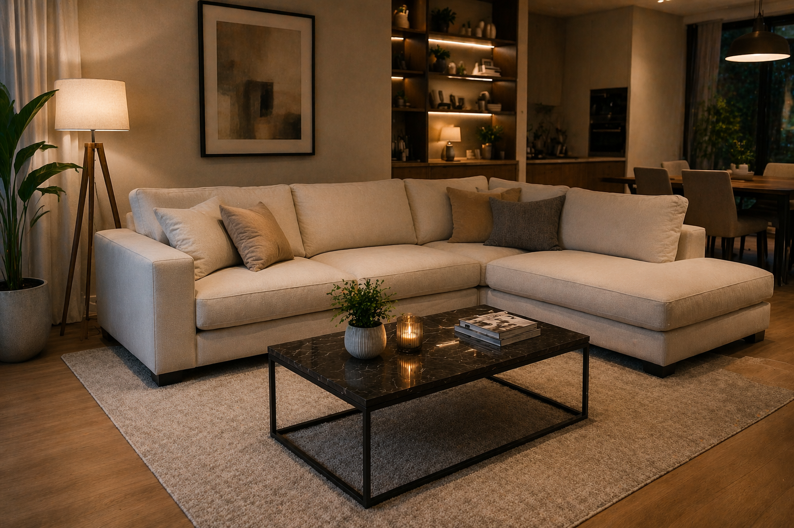

Mejor imagen del ambiente
El sillón vuelve a verse más prolijo, cuidado y alineado con un espacio limpio y bien presentado.
Recuperamos frescura, higiene y presencia en tus sillones con un proceso técnico pensado para actuar en profundidad, respetando cada tipo de tapizado y trabajando con equipamiento profesional.
Un trabajo pensado para lograr profundidad, cuidado del tapizado y una terminación profesional en el propio domicilio del cliente.
Trabajamos en el lugar, sin necesidad de traslado.
Actuamos sobre suciedad, residuos y contaminación acumulada.
Usamos soluciones especiales según la superficie tratada.
Máquinas de inyección, extracción, vapor y secado controlado.
La diferencia no está solo en cómo se ve. También se nota en la sensación de limpieza, frescura y presencia del tapizado.

Cada sillón se evalúa para aplicar el procedimiento correcto según su uso, material y nivel de suciedad.
Retiramos polvo, partículas y suciedad gruesa acumulada en la superficie y en zonas de difícil acceso.
Utilizamos productos especiales para aflojar la suciedad y preparar el tapizado para una limpieza más efectiva.
Trabajamos con el cepillo correcto de acuerdo al tipo de tela, textura y nivel de sensibilidad del material.
Inyectamos agua de manera controlada y extraemos residuos para lograr una limpieza profunda del tapizado.
Incorporamos vapor como parte del proceso para reforzar la higiene y optimizar la terminación general del servicio.
Finalizamos con secado asistido para reducir la humedad residual y mejorar el resultado final.
Más allá de lo visual, un sillón limpio mejora la experiencia de uso y eleva la imagen del ambiente.
El sillón vuelve a verse más prolijo, cuidado y alineado con un espacio limpio y bien presentado.
El proceso técnico permite trabajar más allá de la limpieza superficial y apuntar a residuos acumulados en el tapizado.
Adaptamos el trabajo a cada superficie para lograr un resultado efectivo sin aplicar métodos genéricos.

Escribinos y te asesoramos según el tipo de sillón, cantidad de cuerpos y estado general del tapizado para brindarte una atención clara y profesional.